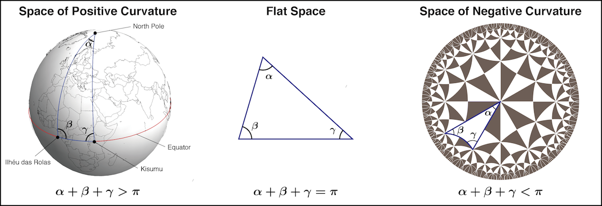
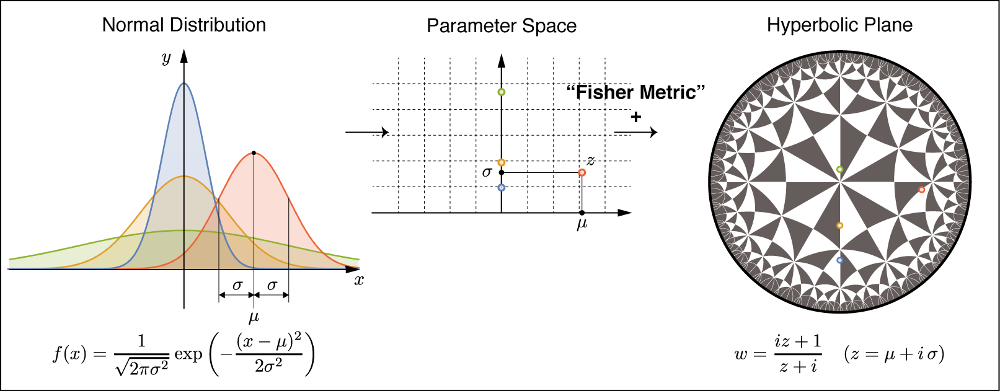

研究分野 Research Area
数学／幾何学／微分幾何学 Mathematics (Differential Geometry)
研究テーマ Research Interest
Hadamard多様体の幾何学 Geometry of Hadamard manifolds
完備，単連結で非正曲率をもつRiemann多様体をHadamard多様体とよびます．Hadamard多様体の定型的な例である階数1非コンパクト型対称空間やそれらの拡張であるDamek-Ricci空間がどのような性質（理想境界の幾何，ホロ球面の幾何）により特徴付けられるか興味を持っています．具体的には，以下のようなことを調べています．
-
$n$次元Hadamard多様体には理想境界とよばれる空間$\partial X$が定まり，$X\cup \partial X$ は錐位相により $n$ 次元円板 $D^n$ と同相になります．$X\cup \partial X$ 上の（無限遠）Dirichlet問題の基本解であるPoisson核（または調和測度）を用いて，$X$ から $\partial X$ 上の確率測度の集合 $\mathscr{P}^+(\partial X)$ への写像 $\varphi$ が定義でき，$\mathscr{P}^+(\partial X)$ はFisher情報計量とよばれる計量 $G$ により，無限次元Riemann多様体とみなすことができます．写像 $\varphi : (X, g)\rightarrow \left(\mathscr{P}^+(\partial X), G\right)$ が「きれいな」埋め込みとなるような $(X, g)$ はDamek-Ricci空間に限るのか，という問題に取り組んでいます．
-
$\theta\in\partial X$ に対し，Busemann関数とよばれる $X$ 上の関数 $B_\theta$ が定義され，その等位超曲面たちをホロ球面（族）とよびます．ホロ球面族のある特別な主方向の主曲率一定性から，実双曲空間 $\mathbb{R}H^n$，複素双曲空間 $\mathbb{C}H^m$，四元数双曲空間 $\mathbb{H}H^n$ が特徴付けられることを明らかにしました．同様にDamek-Ricci空間においてもホロ球面の性質による特徴付けが可能か，調べています．
これらの問題は，漸近的調和空間と調和空間の同値性や，調和空間の分類問題とも関連しています．
A Hadamard manifold is a Riemannian manifold that is complete, simply connected and has non-positive curvature. Our interest is to investigate what properties characterize rank one symmetric spaces of noncompact type and Damek-Ricci spaces by the geometry of the ideal boundary and of horospheres. In particular, we consider the following;
-
An $n$-dimensional Hadamard manifold $(X, g)$ carries an $(n-1)$-dimensional manifold $\partial X$, called the ideal boundary of $X$, and $X\cup \partial X$ is homeomorphic to $n$-dimensional disk $D^n$ by the cone topology. By using the Poisson kernel of $X$, which is the fundamental solution of the Dirichlet problem on $X\cup \partial X$, we can define the Poisson kernel map $\varphi : (X, g)\rightarrow \left(\mathscr{P}^+(\partial X), G\right)$. Here $\mathscr{P}^+(\partial X)$ is the space of all positive probability measures on $\partial X$ and $G$ is the metric on $\mathscr{P}^+(\partial X)$, called the Fisher information metric. If $(X, g)$ is a Damek-Ricci space, $\varphi$ is homothetic and harmonic. We address the problem of finding whether Damek-Ricci spaces are only Hadamard manifolds whose Poisson kernel map is homothetic and harmonic.
-
Let $X$ be a Hadamard manifold. For a boundary point $\theta\in\partial X$, we can define the Busemann function $B_\theta$ on $X$. Horospheres are level hypersurfaces of the Busemann function, which foliate $X$. We find that real hyperbolic spaces $\mathbb{R}H^n$, complex hyperbolic spaces $\mathbb{C}H^m$ and quaternionic hyperbolic spaces $\mathbb{H}H^n$ are characterize by some properties of principal curvatueres and principal directions. We investigate whether Damek-Ricci spaces are characterize by analogous properties in geometry of horosphers.
The above also includes problems of the equivalence between asymptotically harmonicity and harmonicity of Hadamard manifolds, and of the classification of harmonic Hadamard manifolds.
研究紹介（一般向け）
アダマール多様体とよばれる曲率が零以下の空間の幾何学と, 確率密度関数の空間上の幾何学（=情報幾何学）の研究をしています.
アダマール多様体は数空間$\mathbb{R}^n$と同相であり, 「どこまでも歩いていける」空間ですが, 理想境界とよばれるコンパクトな空間が縁を囲んでいます.
この理想境界上の情報幾何を用いて, アダマール多様体の性質を明らかにできないか調べています.
アダマール多様体の幾何学
小学校で「三角形の内角の和は180°である」ことを習いますが, それは曲がっていない平らな空間における性質であり, 一般には正しくありません. 例えば, 地球のような丸い球面上で三角形を描けば, その内角の和は180°を超えてしまいます. 円板（周を含まない円の内部）に対し, 「周に直交する円弧」を「まっすぐな線」と定めると, 三角形の内角の和は180°より小さくなります. 三角形の内角の和が180°より大きいか小さいかとう性質は, 空間の曲がり方を表す「曲率」という概念として一般化されます.

このような曲がった空間をリーマン多様体といい, その上の幾何学のことをリーマン幾何学といいます. リーマン多様体は, いわば仮想的に実現された空間ですが, 相対性理論はリーマン幾何学が土台となり構築されました.
アダマール多様体とは, 曲率が至る所0以下で, 完備, 単連結なリーマン多様体のことです. このような空間上の調和性, 漸近的調和性, 可視性などの性質の関係と, Damek-Ricci空間とよばれる特別なアダマール多様体の性質について研究しています.
確率測度の空間の幾何学
現代幾何学の主な対象である多様体とは, 各点の近傍に必ず座標がはいる集合, つまり, 点の位置を数の組として表せるような集合のことです. 地球（=球面）上の位置は緯度と経度という２つの数の組で表せるので, 球面は2次元多様体となります. 逆に, 座標が定義できる集合は多様体の構造をもち, 幾何学の対象となります. 例えば, 確率論や統計学でとても重要な確率分布である「正規分布」は平均$\mu$と分散$\sigma^2$を与えると密度関数が決まるので, $(\mu, \sigma)$が座標となり, 正規分布全体の集合は多様体の構造をもちます. さらに, ある統計量に由来する幾何構造を与えることにより正規分布の全体は負の定曲率をもつ2次元双曲空間となります（下図参照）.

このように確率分布の集合を多様体とみて, その上の幾何構造を研究する分野を情報幾何学といい, 統計学や情報科学に応用されています. 私は確率分布の全体からなる無限次元の空間上の情報幾何に興味を持っています. Damek-Ricci空間とよばれる特別なアダマール多様体は, 理想境界上の情報幾何の観点でみると, ある良い性質をもつ空間と特徴づけることができます. 情報幾何学的なアプローチでアダマール多様体の性質を明らかにできないか, 研究しています.
研究助成金獲得状況 Grants
科研費 Grants-in-Aid for Scientific Research
- 平成27年度〜平成29年度(予定)：科学研究費補助金 若手研究(B) 課題番号 15K17545
「ブーゼマン・ポアソン核を許容するアダマール多様体の重心写像の幾何学」
FY2015 -- FY2017 (estimated) : Grant-in-Aid for Young Scientists (B), Research Project Number 15K17545
"Geometry of barycenter map on Hadamard manifolds admitting Busemann-Poisson kernel"
内部資金
- 平成16年度 筑波大学大学院数理物質科学研究科プロジェクト研究（奨励研究）［30万円］
「概Kähler多様体のRiemann幾何学的研究」 ›› 報告書
- 平成17年度 筑波大学大学院数理物質科学研究科イニシアティブ（若手奨励研究サポート）［30万円］
「概Kähler構造とEinstein計量」 ›› 報告書
- 平成18年度 筑波大学大学院数理物質科学研究科プロジェクト研究［31万円］
「Hard Lefschetz条件を満たすシンプレクティック多様体の概Kähler構造の研究」 ›› 報告書
- 平成19年度 筑波大学大学院数理物質科学研究科プロジェクト研究［33万円］
「Poisson核写像, 熱核写像とFisher情報計量」 ›› 報告書
- 平成20年度 筑波大学大学院数理物質科学研究科プロジェクト研究［34万円］
「Poisson核, 熱核の情報幾何」 ›› 報告書
- 平成30年度 日本工業大学特別研究費（一般研究推進費）［??万円］
「調和Hadamard多様体上の調和解析とその周辺の研究」